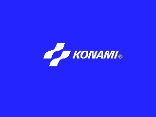
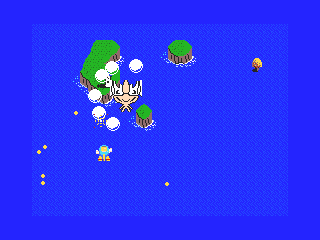
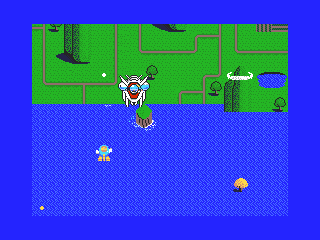
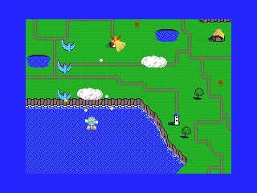
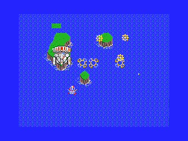
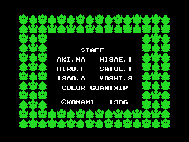

Twin Bee Enhanced (MSX2) — scroll al pixel, musica SCC y graficos de Guantxip
(Also available in English.)
Un parche extraoficial que convierte Twin Bee (Konami, 1986), el cartucho de 32 KB de MSX, en una version mejorada para MSX2: el decorado se desplaza pixel a pixel sobre una pantalla de mapa de bits, las cinco fases y sus cinco jefes llevan graficos nuevos adaptados por Guantxip, los sprites tienen tres colores por linea y la musica suena por el SCC, como en la version de la Konami Game Collection.
La web: https://antxiko.github.io/TwinBee-Enhanced-MSX2-Patch/es/ · Descarga el parche: ips/twinbee_enhanced_msx2.ips
IPS de 134.795 bytes · 5 fases y 5 jefes redibujados · MegaROM de 256 KB con SCC · no se distribuye ninguna ROM
| el parche | ips/twinbee_enhanced_msx2.ips, 134.795 bytes |
| entrada | tu volcado de Twin Bee, 32.768 bytes, sha256 02bdce8ceafe6af05a45b61a689e78807551df663afd152090f7cd9cac827dd4 |
| salida | una MegaROM de 256 KB, mapper Konami SCC, sha256 b7367f637c51c9c699b727176c82dd5178109528015598a41cd36d57996242fe |
| hace falta | un MSX2 con 128 KB de VRAM y el SCC (un cartucho flash con SCC, como un MegaFlashROM SCC+ o un Carnivore2) |
| probado | en openMSX (MSX2 con C-BIOS): las cinco fases jugadas hasta cada jefe; todavia no en un MSX real |
En imagenes









Que cambia
- El decorado es un mapa de bits de Screen 5 que el VDP desplaza linea a linea (registro 23), en lugar del desplazamiento por casillas de MSX1. Los mapas de las cinco fases son de Guantxip.
- Los sprites: naves, enemigos, campanas, nubes y jefes son dibujos de Guantxip, con dos sprites superpuestos para que cada linea tenga tres colores. TwinBee y WinBee son las mismas en todas las fases.
- Los cinco jefes llevan sus dibujos nuevos, con colores propios mientras estan en pantalla.
- La musica es la version SCC de la Konami Game Collection Vol. 3, dentro del propio cartucho.
- La presentacion: una intro, el logo nuevo del titulo y el logo de Konami de los juegos posteriores, el de la doble ola, apareciendo como en Salamander.
- Los creditos del final incluyen los graficos.
Aplicarlo
Con cualquier herramienta de IPS (Lunar IPS, Floating IPS, RomPatcher.js) sobre tu volcado, o directamente desde openMSX, que aplica parches IPS al cargar el cartucho:
openmsx -machine C-BIOS_MSX2 -cart twinbee.rom -ips twinbee_enhanced_msx2.ips -romtype KonamiSCCO con Python, que comprueba el resultado:
python3 tools/ips.py aplica twinbee.rom ips/twinbee_enhanced_msx2.ips twinbee_enhanced.romLa ROM parcheada es una MegaROM Konami SCC: en un cartucho flash, elige ese mapper si el cargador lo pregunta.
Limitaciones conocidas
- Con el jefe en pantalla el juego baja a veces de 30 cuadros por segundo: el driver de musica SCC cuesta mucho mas que el reproductor PSG original.
- La fase 5 deja muy pocos patrones de sprite libres: sus nubes son blancas, como en el original, y cuando hay muchos enemigos distintos en pantalla alguno sale con menos colores.
- Al cambiar de fase la pantalla se apaga medio segundo mientras se cargan los graficos nuevos.
- La partida a dos jugadores no esta probada.
Creditos
- Graficos: Guantxip.
- Port y programacion: Antxiko (Compila!).
- Pruebas: Araubi.
- El juego original y su musica: Konami.
Aviso
Extraoficial y gratuito. No se distribuye ni la ROM original ni la parcheada. Lee el aviso legal antes de compartir el parche: ademas del codigo y los graficos nuevos, lleva el driver de musica SCC de la Konami Game Collection Vol. 3.